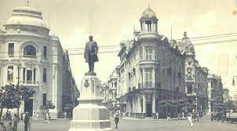

A história do Marco Zero no Recife Antigo
O Marco Zero no Recife Antigo é o lugar de referência onde a cidade nasceu e todas as medidas oficiais de distâncias rodoviárias usam como ponto de partida. Seu nome é, na verdade, Praça Rio Branco e fica ao lado do Porto de Pernambuco. Pode-se dizer que ele se situa no centro histórico da cidade, que é mais conhecido como Recife Antigo por ser a parte onde se iniciou o povoamento da capital pernambucana. A popularização do nome Marco Zero aconteceu desde 1938, devido à instalação do símbolo geográfico na parte central da praça. Ele foi uma doação do Automóvel Clube de Pernambuco. Além disso, há nela uma estátua de bronze de 2,80 metros, de autoria do escultor francês Félix Charpentier.
Museu Cais do Sertão
Para os amantes de artes e culturas, o Museu Cais do Sertão traz referências à cultura do sertão nordestino e oferece experiências interativas e sensoriais. Além disso, o espaço conta com cursos, palestras e workshops e possui exposições permanentes e temporárias sobre o tema.

Boemia no Marco Zero do Recife Antigo
Por último, não dá para falar do Marco Zero sem considerar as muitas opções de entretenimento nos antigos armazéns ao longo da orla. Para se ter uma ideia, são bares temáticos, restaurantes com gastronomia local e mundial e points para quem quer diversão, boa música e entretenimento. Além deles, há opções para os mais diversos bolsos e gostos também na região central do Antigo Recife, em vielas de pedra sabão e um charme único da capital de Pernambuco.